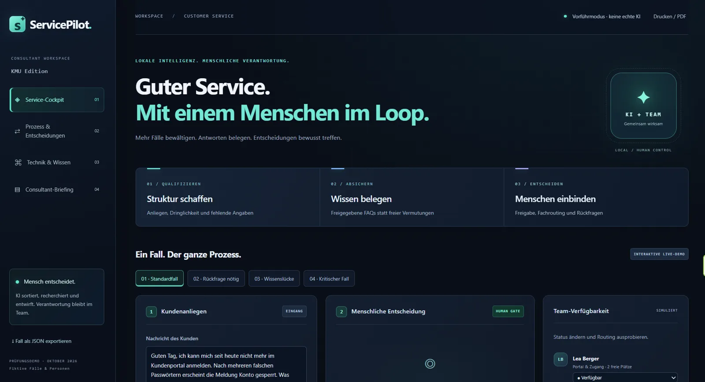
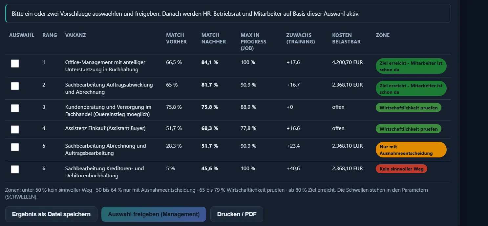

Potenzialanalyse & Strategie
Aufgaben und Geschäftsprozesse schnell verstehen, Chancen erkennen und gemeinsam geeignete Lösungswege erarbeiten.
Ich helfe mittelständischen Unternehmen, passende Einsatzmöglichkeiten für künstliche Intelligenz zu finden und daraus praxistaugliche Lösungen zu entwickeln.
Ich begleite Ihr Vorhaben von Anfang bis Ende – mit dem Ziel, dass KI konkrete Aufgaben löst und im Arbeitsalltag genutzt wird.
Aufgaben und Geschäftsprozesse schnell verstehen, Chancen erkennen und gemeinsam geeignete Lösungswege erarbeiten.
Auswahl geeigneter Technologien und technische Umsetzung – mit verschiedenen KI-Modellen, cloudbasiert oder lokal betrieben, auch in rechtlich anspruchsvollen Umgebungen.
Die Möglichkeiten von KI verständlich machen und Ihre Mitarbeitenden dabei unterstützen, sie im Arbeitsalltag einzusetzen.
Drei Beispiele für KI-Projekte und prozessgestützte Anwendungen, die Sie direkt im Browser ausprobieren können.

Serviceteams verlieren viel Zeit mit Suchen, Sortieren und Weiterreichen. ServicePilot ordnet eingehende Anfragen ein, erkennt fehlende Angaben, belegt Antworten aus freigegebenen FAQs und bereitet Entwürfe vor. Bei Wissenslücken oder kritischen Fällen stoppt die KI und schlägt eine passende Fachperson vor. Freigaben und Verantwortung bleiben beim Team. Die KI läuft lokal und die Daten verlassen das Haus nicht.
Die Demo arbeitet mit fiktiven Fällen und Personen. Es werden keine Nachrichten versendet.
Ungeplante Stillstände kosten Mittelständler Zeit und Geld, und die Signale dafür stecken längst in den Maschinendaten. FactoryPulse zeigt am Beispiel einer Lackierzelle, wie Messwerte wie Temperatur, Vibration, Druck und Motorstrom zusammenlaufen, schleichende Veränderungen erkannt und als erklärter Prüfhinweis sichtbar gemacht werden. Fehlende Sensorwerte werden nicht überspielt, und über jede Wartung entscheidet ein Mensch mit Begründung. Die Animation läuft live im Browser.
Die Demo arbeitet mit simulierten Messdaten und ohne Verbindung zu einer Anlage.

KI macht manche Tätigkeiten überflüssig, gleichzeitig fehlen Fachkräfte und es entstehen neue Positionen. Die Lösung gleicht die Kompetenzen vorhandener Mitarbeitender mit offenen Stellen ab und zeigt, welche Weiterbildung den Weg in eine neue Rolle öffnet, was sie kostet und wie hoch die Passung danach ist. Wirtschaftliche und rechtliche Vorgaben fließen mit ein und lassen sich frei einstellen. Die KI liest und formuliert, gerechnet wird nachvollziehbar und deterministisch. Das Ergebnis ist eine Entscheidungsgrundlage für das Management, keine automatische Personalentscheidung.
Die Demo arbeitet mit einem fiktiven Beispielfall und erfundenen Daten.
Was bewegt die KI-Welt? Neue Modelle, Forschung und Anwendungen – auf Deutsch zusammengefasst, mit Einordnung, Quellenlinks und einem Archiv der Tagesausgaben.
Wo KI heute steht, welche fünf Fehleinschätzungen Entscheidungen verzerren, wie sich die Technik entwickeln könnte und welche nächsten Schritte sich für Entscheider lohnen. Etwa acht Minuten Lesezeit.
Ich bin Dirk Sommerfeld. Als KI-Consultant unterstütze ich mittelständische Unternehmen dabei, passende Einsatzmöglichkeiten für künstliche Intelligenz zu finden und daraus praxistaugliche Lösungen zu entwickeln.
Dafür verbinde ich langjährige Erfahrung in Industrie, IoT, Maschinendaten und Cloudtechnologien mit meiner Arbeit als technischer Leiter, CTO und CEO. Ich kenne die technischen Herausforderungen ebenso wie die unternehmerischen Entscheidungen, die mit der Einführung neuer Technologien verbunden sind.
Meine technische Expertise binde ich nahtlos in meine KI-Beratungsprojekte ein.
Mein Anspruch: KI so in Ihr Unternehmen einzubinden, dass sie konkrete Aufgaben löst, Abläufe verbessert und für Ihre Mitarbeitenden nutzbar wird.
Ob erste KI-Frage oder konkretes Projekt – der erste Schritt ist ein Gespräch.
Kontakt aufnehmen ↗